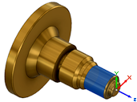

<div id="wcs_orientation_flipZ"><p>Inverse l'orientation de l'axe Z de 180 degrés.</p>

<table class="tipTable" cellspacing="10">
<tr>
<td><center></center></td>
<td><center></center></td>
</tr><tr>
<td><center><p><b>Fraisage Z</b></p></center></td>
<td><center><p><b>Inverser Z de 180 degrés</b></p></center></td>
</tr></table>

<table class="tipTable" cellspacing="10">
<tr>
<td><center></center></td>
<td><center></center></td>
</tr><tr>
<td><center><p><b>Tournage Z</b></p></center></td>
<td><center><p><b>Inverser Z de 180 degrés</b></p></center></td>
</tr></table>
</div>